تصوير عظم الفخذFemur Radiography
نظري · م04 · 11.2 دقيقةأقسام المحاضرة (9)
- إسقاطات عظم الفخذFemur Projections
- تشريح عظم الفخذFemur Anatomy
- عوامل التعرّضTechnical Factors
- إسقاط الورك الأمامي الخلفي (جانب واحد)AP Unilateral Hip
- الإسقاط الجانبي المحوري السفلي العلوي (طريقة دانيليوس-ميلر)Axiolateral Inferosuperior (Danelius-Miller)
- الإسقاط الجانبي المحوري المعدّل (طريقة كليمنتس-ناكاياما)Modified Axiolateral (Clements-Nakayama)
- الإسقاط الأمامي الخلفي للجزء الأوسط والبعيد من عظم الفخذAP Femur: Mid- and Distal
- الإسقاطات الجانبية للجزء الأوسط والبعيد من عظم الفخذLateral Femur: Mid- and Distal
- الإسقاط الجانبي للجزء الأوسط والقريب من عظم الفخذLateral Femur: Mid- and Proximal
إسقاطات عظم الفخذFemur Projections
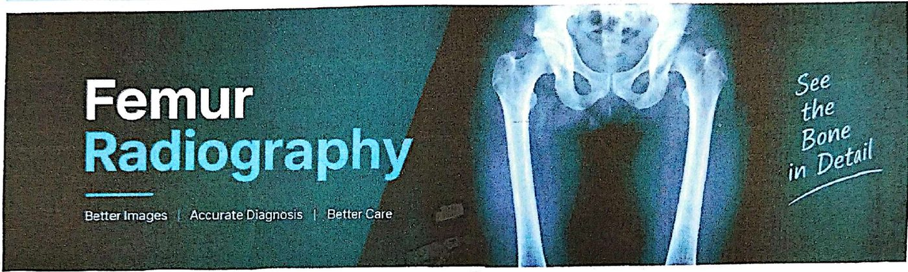
المسقطات: عظم الفخذProjections — Femur
- 1. AP unilateral Hip projection: Hip and proximal Femurإسقاط AP للورك من جانب واحد: الورك والجزء القريب من عظم الفخذ.
- 2. Axiolateral inferosuperior projection: Hip and proximal Femur—traumaالإسقاط الجانبي المحوري السفلي العلوي: الورك والجزء القريب من عظم الفخذ (في الإصابات).
- 3. Modified axiolateral—possible trauma projection: Hip and proximal Femurالإسقاط الجانبي المحوري المعدّل (مع احتمال الإصابة): الورك والجزء القريب من عظم الفخذ.
- 4. AP projection: Femur—mid- and distalإسقاط AP: الجزء الأوسط والبعيد من عظم الفخذ.
- 5. Lateral-mediolateral or lateromedial projections: Femur: mid- and distalالإسقاط الجانبي (إنسي وحشي أو وحشي إنسي): الجزء الأوسط والبعيد من عظم الفخذ.
- 6. Lateral-mediolateral projection: femur: mid-and proximalالإسقاط الجانبي الإنسي الوحشي: الجزء الأوسط والقريب من عظم الفخذ.
تشريح عظم الفخذFemur Anatomy
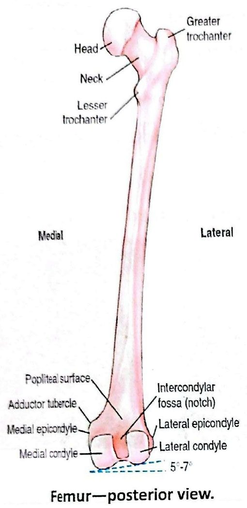
Femur—posterior view.
عظم الفخذ: منظر خلفي.
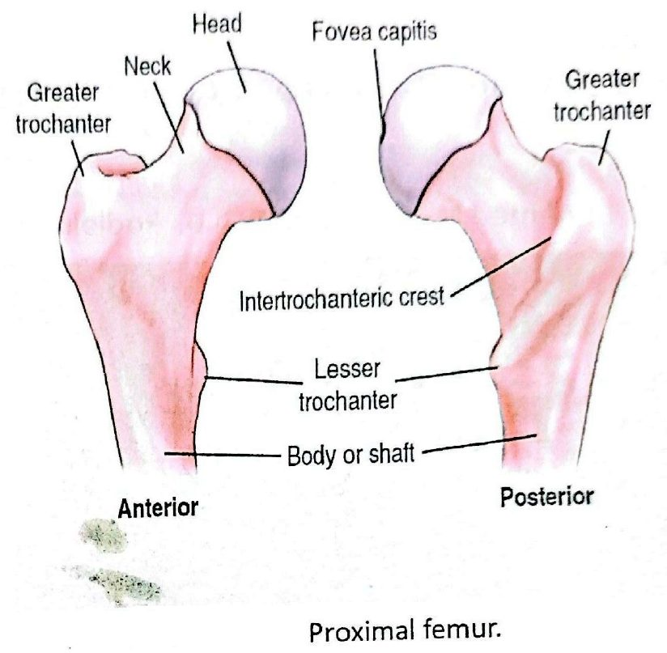
Proximal femur.
الجزء القريب من عظم الفخذ.
عوامل التعرّضTechnical Factors
- • Minimum SID is 40 inches (102 cm).أقل SID هي 40 إنش (102 سم).
- • IR size—35 x 43 cm (14 x 17 inches), Lengthwiseحجم IR: 35 × 43 سم (14 × 17 إنش)، بالطول.
- • Exposure : 65-70 kVp, 8-12 mAsالتعرّض: 65–70 kVp، و8–12 mAs.
- • Shielding Shield radiosensitive tissues outside region of interest.التدريع: درّع الأنسجة الحساسة للإشعاع الواقعة خارج المنطقة المطلوبة.
Ensure shielding does not obscure any aspect of femur.
تأكّد أن الدرع لا يحجب أي جزء من عظم الفخذ.
Shielding Place lead shield over gonadal area. Secure around waist in kneeling position and extend shield down to midfemur level.
التدريع: ضع درعاً رصاصياً فوق منطقة الغدد التناسلية. ثبّته حول الخصر في وضعية الجثوّ (على الركبتين)، ومُدّ الدرع إلى الأسفل حتى مستوى منتصف عظم الفخذ.
Computed radiography or digital radiography Close collimation is important over unexposed portions of IR to prevent fogging from scatter radiation.
التصوير الشعاعي المحوسب أو الرقمي: التسديد الضيّق مهم فوق الأجزاء غير المعرّضة من IR لمنع التضبيب الناتج عن الإشعاع المتشتّت.
إسقاط الورك الأمامي الخلفي (جانب واحد)AP Unilateral Hip
AP unilateral Hip projection: Hip and proximal Femur
إسقاط AP للورك من جانب واحد: الورك والجزء القريب من عظم الفخذ.
دواعي الفحصClinical Indications
- • Postoperative or follow-up examination to demonstrate the acetabulum, femoral head, neck, and greater trochanter.فحص بعد العملية الجراحية أو فحص متابعة لإظهار الحُقّ، ورأس عظم الفخذ، وعنقه، والمدوَّر الكبير.
- • Evaluate condition and placement of any existing orthopedic appliance.تقييم حالة أي أداة تقويمية موجودة وموضعها.
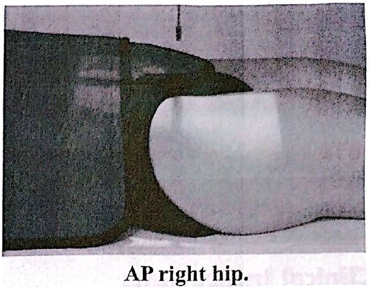
وضعية المريضPatient Position
With patient supine, place arms at sides or across superior chest.
المريض مستلقٍ على ظهره، والذراعان إلى الجانبين أو على أعلى الصدر.
وضعية الجزءPart Position
- • Locate femoral neck and align to CR and to midline of table and/or IR.حدّد موضع عنق عظم الفخذ وطابِقه مع الشعاع المركزي ومع خط منتصف الطاولة و/أو IR.
- • Ensure no rotation of pelvis (equal distance from ASISs to table).تأكّد من عدم دوران الحوض (تساوي مسافة الشوكتين ASIS عن الطاولة).
- • Rotate affected leg internally 15° to 20°دوّر الساق المصابة إلى الداخل 15 إلى 20 درجة.
الشعاع المركزيCR
- • CR is perpendicular to IR, directed to 1 to 2 inches (2.5 to 5 cm) distal to midfemoral neck (to include all of orthopedic appliance of hip, if present).الشعاع المركزي عمودي على IR، ويُوجَّه إلى نقطة 1 إلى 2 إنش (2.5 إلى 5 سم) أسفل منتصف عنق عظم الفخذ (لتشمل الصورة كل الأداة التقويمية في الورك إن وُجدت).
- • Femoral neck can be located about 1 to 2 inches (3 to 5 cm) medial and 3 to 4 inches (8 to 10 cm) distal to ASIS.يُحدَّد عنق عظم الفخذ على بُعد 1 إلى 2 إنش (3 إلى 5 سم) إنسيّ ASIS، و3 إلى 4 إنش (8 إلى 10 سم) أسفلها.
ما تُظهره الصورةAnatomy Demonstrated
- • The proximal one-third of the femur should be visualized, along with the acetabulum and adjacent parts of the pubis, ischium, and ilium.يجب أن يظهر الثلث القريب من عظم الفخذ مع الحُقّ والأجزاء المجاورة من العانة والإسك والحرقفة.
- • Any existing orthopedic appliance should be visible in its entirety.يجب أن تظهر أي أداة تقويمية موجودة بكاملها.
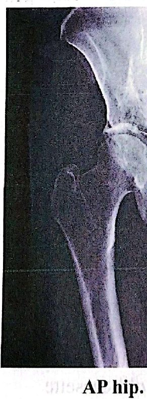
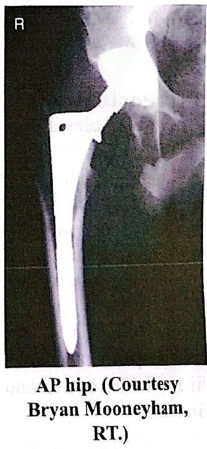
الإسقاط الجانبي المحوري السفلي العلوي (طريقة دانيليوس-ميلر)Axiolateral Inferosuperior (Danelius-Miller)
Axiolateral inferosuperior projection:Hip and proximal Femur-trauma Danelius-miller method
الإسقاط الجانبي المحوري السفلي العلوي: الورك والجزء القريب من عظم الفخذ في الإصابات — طريقة دانيليوس-ميلر.
NOTE: This is a common projection for trauma, surgery, and postsurgery patients, as well as for other patients who cannot move or rotate the affected leg for frog-leg lateral.
ملاحظة: هذا إسقاط شائع لمرضى الإصابات والجراحة وما بعد الجراحة، وللمرضى الآخرين الذين لا يستطيعون تحريك الساق المصابة أو تدويرها لإجراء الإسقاط الجانبي بوضعية ساق الضفدع.
دواعي الفحصClinical Indications
- • Lateral view for fracture or dislocation assessment in trauma hip situations when affected leg cannot be movedمنظر جانبي لتقييم الكسر أو الخلع في إصابات الورك عندما لا يمكن تحريك الساق المصابة.
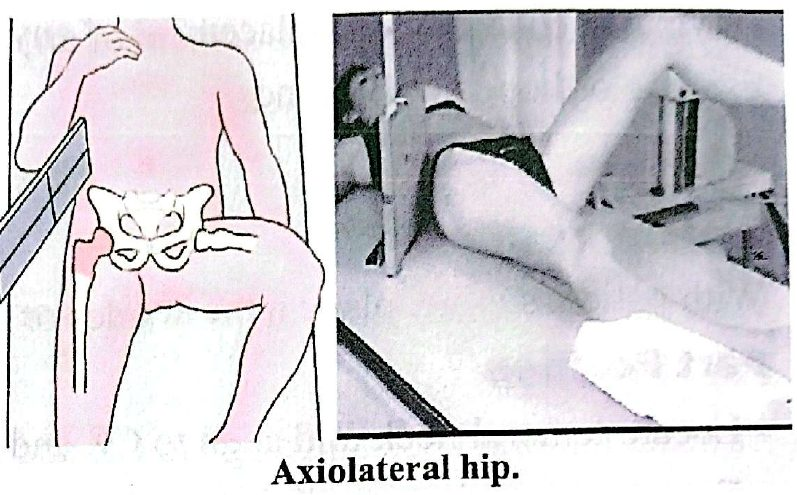
وضعية المريضPatient Position
May be done on stretcher or bedside if patient cannot be moved . Patient is supine, with pillow provided for head; elevate pelvis 1 to 2 inches (3 to 5 cm) if possible by placing supports under pelvis (more important for thin patients and for patients on a soft pad or in a bed).
يمكن إجراؤه على النقّالة أو بجانب السرير إذا تعذّر نقل المريض. المريض مستلقٍ على ظهره مع وسادة تحت الرأس؛ ارفع الحوض 1 إلى 2 إنش (3 إلى 5 سم) إن أمكن بوضع دعامات تحته (وهذا أهم للمرضى النحيفين، وللمرضى على فرشة ليّنة أو في سرير).
وضعية الجزءPart Position
- • Flex and elevate unaffected leg so that thigh is near vertical position and outside collimation field.اثنِ الساق السليمة وارفعها بحيث يكون الفخذ قريباً من الوضع العمودي وخارج حقل التسديد.
- • Support in this position.ادعمها في هذا الوضع.
- • (Do NOT place leg on collimator or x-ray tube due to risk of burns or electrical shock).(لا تضع الساق على المُسدِّد أو على أنبوب الأشعة لخطر الحروق أو الصدمة الكهربائية).
- • Check to ensure no rotation of pelvis (equal ASIS-table distance).تأكّد من عدم دوران الحوض (تساوي مسافة ASIS عن الطاولة).
- • Place IR in crease above iliac crest and adjust so that it is parallel to femoral neck and perpendicular to CR.ضع IR في الثنية فوق العرف الحرقفي، وعدّله بحيث يكون موازياً لعنق عظم الفخذ وعمودياً على الشعاع المركزي.
- • Use cassette holder if available, or use sandbags to hold cassette in place.استعمل حامل الكاسيت إن توفّر، أو أكياس الرمل لتثبيت الكاسيت في مكانه.
- • Internally rotate affected leg 15° to 20° unless contraindicated by possible fracture or other pathologic process (see warning above).دوّر الساق المصابة إلى الداخل 15 إلى 20 درجة، ما لم يكن ذلك ممنوعاً بسبب احتمال كسر أو حالة مرضية أخرى (انظر التحذير أعلاه).
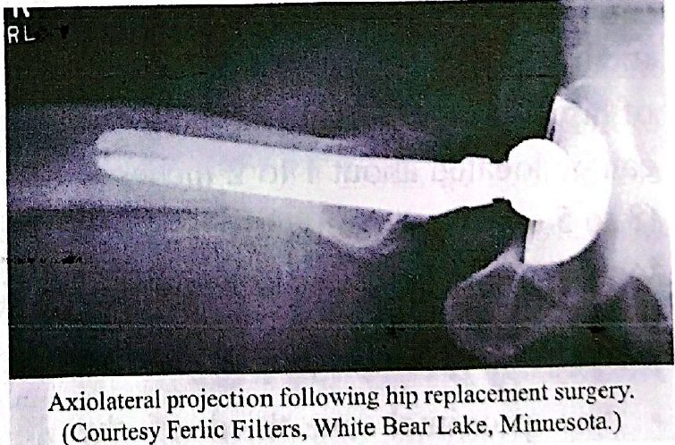
الشعاع المركزيCR
CR is perpendicular to femoral neck and to IR.
الشعاع المركزي عمودي على عنق عظم الفخذ وعلى IR.
ما تُظهره الصورةAnatomy Demonstrated
- • Entire femoral head and neck, trochanter, and acetabulum should be visualized.يجب أن يظهر رأس عظم الفخذ وعنقه بكاملهما، والمدوَّر، والحُقّ.
الإسقاط الجانبي المحوري المعدّل (طريقة كليمنتس-ناكاياما)Modified Axiolateral (Clements-Nakayama)
Modified axiolateral—possible trauma projection: Hip and proximal Femur Clements-nakayama method
الإسقاط الجانبي المحوري المعدّل مع احتمال الإصابة: الورك والجزء القريب من عظم الفخذ — طريقة كليمنتس-ناكاياما.
دواعي الفحصClinical Indications
- • Lateral oblique view is useful for assessment of possible hip fracture or with arthroplasty (surgery for hip prosthesis) when the patient has limited movement in both lower limbs and the inferosuperior projection cannot be obtained.المنظر الجانبي المائل مفيد لتقييم احتمال كسر الورك، أو مع رأب المفصل (جراحة الورك الصناعي)، عندما تكون حركة الطرفين السفليين محدودة ولا يمكن إجراء الإسقاط السفلي العلوي.
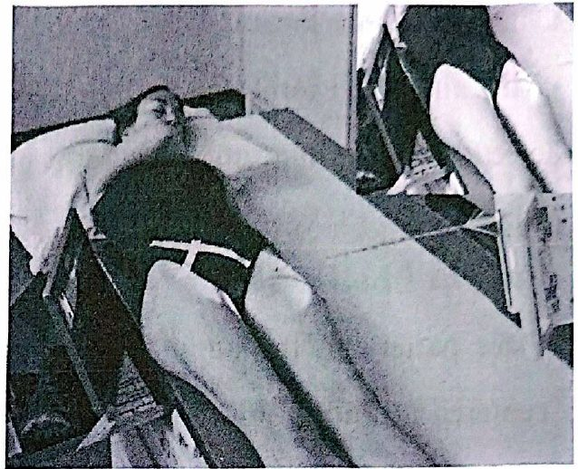
وضعية المريضPatient Position
With patient supine, position affected side near edge of table with both legs fully extended. Provide pillow for head and place arms across superior chest.
المريض مستلقٍ على ظهره، والجانب المصاب قرب حافة الطاولة، والساقان ممدودتان بالكامل. ضع وسادة تحت الرأس والذراعين على أعلى الصدر.
وضعية الجزءPart Position
- • Maintain leg in neutral (anatomic) position (15° posterior CR angle compensates for internal leg rotation).أبقِ الساق في الوضع المحايد (التشريحي) (إمالة الشعاع 15 درجة إلى الخلف تعوّض عن تدوير الساق للداخل).
- • Rest IR on extended Bucky tray, which places the bottom edge of the IR about 2 inches (5 cm) below the level of the tabletop.ضع IR على درج البوكي الممدود، فتكون الحافة السفلى لـIR نحو 2 إنش (5 سم) تحت مستوى سطح الطاولة.
- • Tilt IR about 15° from vertical and adjust alignment of IR to ensure that face of IR is perpendicular to CR to prevent grid cutoff.أمِل IR نحو 15 درجة عن الوضع العمودي، وعدّل محاذاته ليكون وجهه عمودياً على الشعاع المركزي لمنع قطع الشبكة.
- • Center centerline of IR to projected CR.مركِز خط منتصف IR على موضع الشعاع المركزي المُسقَط.
الشعاع المركزيCR
Angle CR mediolaterally as needed so that it is perpendicular to and centered to femoral neck. It should be angled posteriorly 15° to 20° from horizontal.
أمِل الشعاع المركزي من الإنسي إلى الوحشي حسب الحاجة ليكون عمودياً على عنق عظم الفخذ ومُمركَزاً عليه. ويجب أن يُمال إلى الخلف 15 إلى 20 درجة عن الأفقي.
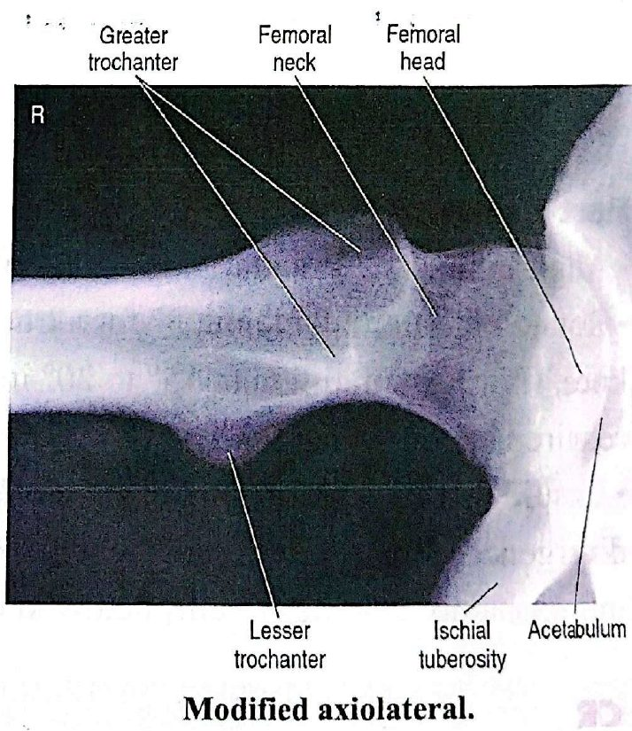
ما تُظهره الصورةAnatomy Demonstrated
- • Lateral oblique views of acetabulum, femoral head and neck, and trochanteric area are visible.تظهر مناظر جانبية مائلة للحُقّ، ورأس عظم الفخذ وعنقه، ومنطقة المدوَّرين.
الإسقاط الأمامي الخلفي للجزء الأوسط والبعيد من عظم الفخذAP Femur: Mid- and Distal
دواعي الفحصClinical Indications
- • Mid- and distal femur, including knee joint for detection and evaluation of fractures and/or bone lesions.الجزء الأوسط والبعيد من عظم الفخذ، مع مفصل الركبة، لكشف الكسور و/أو الآفات العظمية وتقييمها.
وضعية المريضPatient Position
Place patient in the supine position, with femur centered to midline of table; give pillow for head. (This projection also may be done on a stretcher with a portable grid placed under the femur.)
ضع المريض مستلقياً على ظهره، وعظم الفخذ في منتصف الطاولة، مع وسادة تحت الرأس. (ويمكن إجراء هذا الإسقاط أيضاً على النقّالة مع شبكة محمولة تحت عظم الفخذ.)
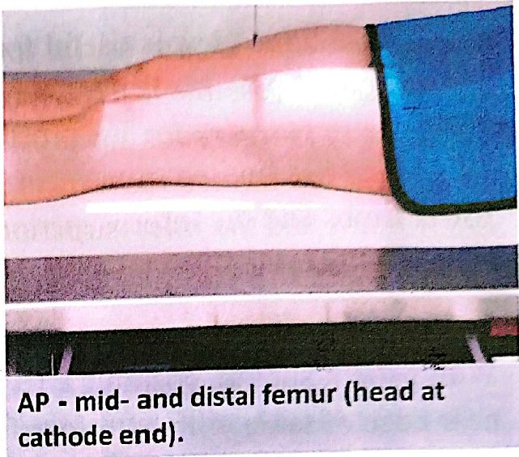
NOTE: If the site of interest is in the area of the proximal femur, a unilateral hip routine or pelvis is recommended, as described in this chapter.
ملاحظة: إذا كانت المنطقة المطلوبة في الجزء القريب من عظم الفخذ، يُنصح بإجراء فحص الورك من جانب واحد أو الحوض، كما وُصف في هذا الفصل.
وضعية الجزءPart Position
- • Align femur to CR and to midline of table or IR.طابِق عظم الفخذ مع الشعاع المركزي ومع خط منتصف الطاولة أو IR.
- • Rotate leg internally about 5° for a true AP, as for an AP knee.دوّر الساق إلى الداخل نحو 5 درجات للحصول على AP حقيقي، كما في إسقاط الركبة AP.
- • (For proximal femur, 15° to 20° internal leg rotation is required, as for an AP hip.)(أما للجزء القريب من عظم الفخذ فيلزم تدوير الساق للداخل 15 إلى 20 درجة، كما في إسقاط الورك AP.)
- • Ensure that knee joint is included on IR, considering the divergence of the x-ray beam.تأكّد أن مفصل الركبة مشمول في IR، مع مراعاة تباعد حزمة الأشعة.
- • (Lower IR margin should be approximately 2 inches [5 cm] below knee joint.)(يجب أن تكون الحافة السفلى لـIR نحو 2 إنش [5 سم] أسفل مفصل الركبة.)
الشعاع المركزيCR
- • CR is perpendicular to femur and IR.الشعاع المركزي عمودي على عظم الفخذ وعلى IR.
- • Direct CR to midpoint of IR.وجّه الشعاع المركزي إلى منتصف IR.
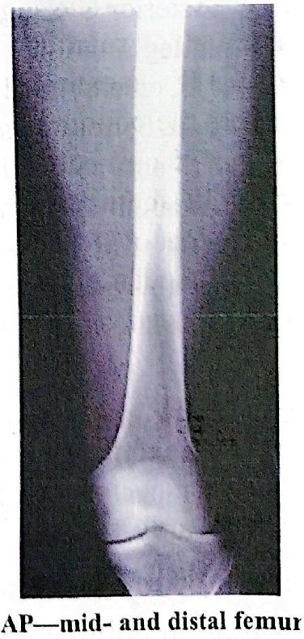
ما تُظهره الصورةAnatomy Demonstrated
- • Distal two-thirds of distal femur, including knee joint, is shown:يظهر الثلثان البعيدان من عظم الفخذ، مع مفصل الركبة.
- • Knee joint space will not appear fully open because of divergent x-ray beam.لن تظهر مسافة مفصل الركبة مفتوحة بالكامل بسبب تباعد حزمة الأشعة.
الإسقاطات الجانبية للجزء الأوسط والبعيد من عظم الفخذLateral Femur: Mid- and Distal
Lateral-mediolateral or lateromedial projections: Femur: mid- and distal
الإسقاطان الجانبيان (إنسي وحشي أو وحشي إنسي): الجزء الأوسط والبعيد من عظم الفخذ.
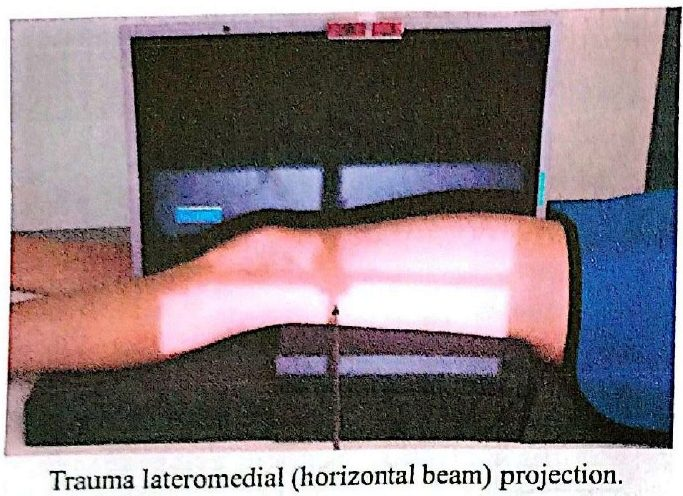
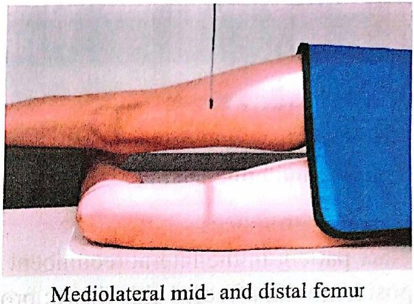
دواعي الفحصClinical Indications
- • Mid- and distal femur, including knee joint for detection and evaluation of fractures and/or bone lesions.الجزء الأوسط والبعيد من عظم الفخذ مع مفصل الركبة، لكشف الكسور و/أو الآفات العظمية وتقييمها.
NOTE: For possible trauma, if the site of interest is in the area of the proximal femur, a unilateral trauma hip routine is recommended. For nontrauma, lateral of proximal femur
ملاحظة: مع احتمال وجود إصابة، إذا كانت المنطقة المطلوبة في الجزء القريب من عظم الفخذ، يُنصح بفحص الورك من جانب واحد الخاص بالإصابات. وفي غير الإصابات، الإسقاط الجانبي للجزء القريب من عظم الفخذ
وضعية المريضPatient Position
Place patient in the lateral recumbent position, or supine for trauma patient.
ضع المريض في وضعية الاستلقاء الجانبي، أو مستلقياً على ظهره إذا كان مصاباً.
وضعية الجزء: الاستلقاء الجانبيPart Position Lateral Recumbent
WARNING: Do not attempt this position if patient has severe trauma.
تحذير: لا تحاول هذه الوضعية إذا كان المريض مصاباً إصابة شديدة.
- • Flex knee approximately 45° with patient on affected side, and align femur to midline of table or IR.اثنِ الركبة نحو 45 درجة والمريض على جانبه المصاب، وطابِق عظم الفخذ مع خط منتصف الطاولة أو IR.
- • Place unaffected leg behind affected leg to prevent over-rotation.ضع الساق السليمة خلف الساق المصابة لمنع الدوران الزائد.
- • Adjust IR to include knee joint (lower IR margin should be approximately 2 inches [5 cm] below knee joint).عدّل IR ليشمل مفصل الركبة (الحافة السفلى لـIR نحو 2 إنش [5 سم] أسفل مفصل الركبة).
- • A second IR to include the proximal femur and hip generally will be required on an adultوعادةً يلزم IR ثانٍ ليشمل الجزء القريب من عظم الفخذ والورك عند البالغين.
الإسقاط الوحشي الإنسي للإصاباتTrauma Lateromedial Projection
- • Place support under affected leg and knee and support foot and ankle in true AP position.ضع دعامة تحت الساق المصابة والركبة، وادعم القدم والكاحل في وضع AP حقيقي.
- • Place IR on edge against medial aspect of thigh to include knee, with horizontal x-ray beam directed from lateral side.ضع IR على حافته ملاصقاً للجهة الإنسية من الفخذ ليشمل الركبة، مع شعاع أفقي يُوجَّه من الجهة الوحشية.
CR : CR perpendicular to femur and IR directed to midpoint of IR
الشعاع المركزي: عمودي على عظم الفخذ وعلى IR، ويُوجَّه إلى منتصف IR.
ما تُظهره الصورةAnatomy Demonstrated
- • Distal two-thirds of distal femur, including the knee joint, is shown.يظهر الثلثان البعيدان من عظم الفخذ، مع مفصل الركبة.
- • Knee joint will not appear open, and distal margins of the femoral condyles will not be superimposed because of divergent x-ray beamلن يظهر مفصل الركبة مفتوحاً، ولن تتراكب الحافتان البعيدتان للقمتي عظم الفخذ، بسبب تباعد حزمة الأشعة.
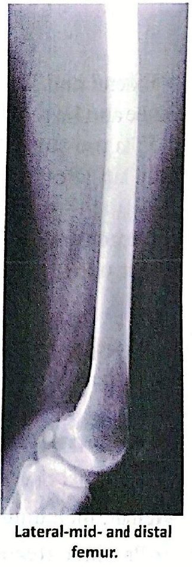
الإسقاط الجانبي للجزء الأوسط والقريب من عظم الفخذLateral Femur: Mid- and Proximal
Lateral-mediolateral projection: femur: mid-and proximal
الإسقاط الجانبي الإنسي الوحشي: الجزء الأوسط والقريب من عظم الفخذ.
دواعي الفحصClinical Indications
- • Mid- and proximal femur including lateral hip for detection and evaluation of fractures and bone lesions.الجزء الأوسط والقريب من عظم الفخذ، مع الورك جانبياً، لكشف الكسور والآفات العظمية وتقييمها.
وضعية المريضPatient Position
Place patient in the lateral recumbent position, with affected side down; provide pillow for head.
ضع المريض في وضعية الاستلقاء الجانبي، والجانب المصاب إلى الأسفل، مع وسادة تحت الرأس.
وضعية الجزءPart Position
- • Flex affected knee about 45° and align femur to midline of table.اثنِ الركبة المصابة نحو 45 درجة، وطابِق عظم الفخذ مع خط منتصف الطاولة.
- • (Remember the proximal and midportions of the femur are nearer to the anterior aspect of the thigh.)(تذكّر أن الجزء القريب والأوسط من عظم الفخذ أقرب إلى الجهة الأمامية من الفخذ.)
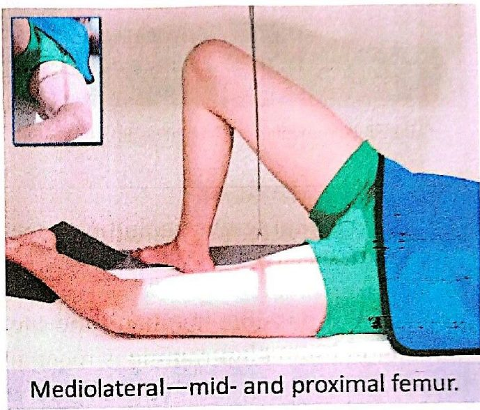
- • Extend and support unaffected leg behind affected knee and have patient roll back (posteriorly) about 15° to prevent superimposition of proximal femur and hip joint.مُدّ الساق السليمة وادعمها خلف الركبة المصابة، واطلب من المريض أن يميل إلى الخلف نحو 15 درجة لمنع تراكبها على الجزء القريب من عظم الفخذ ومفصل الورك.
- • Adjust IR to include hip joint, considering the divergence of the x-ray beam.عدّل IR ليشمل مفصل الورك، مع مراعاة تباعد حزمة الأشعة.
- • (Palpate ASIS and place upper IR margin at the level of this landmark.)(جُسّ ASIS وضع الحافة العليا لـIR عند مستوى هذا المعلم.)
الشعاع المركزيCR
CR perpendicular to femur and CR directed to midpoint of IR
الشعاع المركزي عمودي على عظم الفخذ، ويُوجَّه إلى منتصف IR.
ما تُظهره الصورةAnatomy Demonstrated
- • Proximal one-half to two-thirds of the proximal femur, including the hip joint, is shown.يظهر النصف إلى الثلثين القريبين من عظم الفخذ، مع مفصل الورك.
- • Proximal femur and hip joint should not be superimposed by opposite limb.يجب ألا يتراكب الطرف المقابل على الجزء القريب من عظم الفخذ ومفصل الورك.
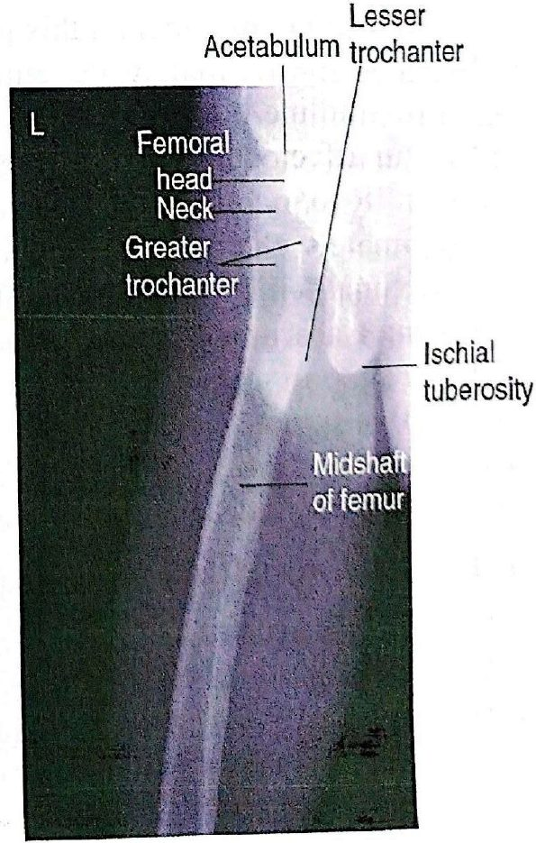
المحاضرة مسموعة
نص الأستاذ بالإنكليزي مثل الأصل · 11.2 دقيقة. اضغط أي جملة تسمعها، أو مصطلح منقّط تسمع لفظه ومعناه.
Femur Projectionsإسقاطات عظم الفخذ
Femur Projections
Projections — Femur
AP unilateral Hip projection: Hip and proximal Femur
Axiolateral inferosuperior projection: Hip and proximal Femur—trauma
Modified axiolateral—possible trauma projection: Hip and proximal Femur
AP projection: Femur—mid- and distal
Lateral-mediolateral or lateromedial projections: Femur: mid- and distal
Lateral-mediolateral projection: femur: mid-and proximal
Femur Anatomyتشريح عظم الفخذ
Femur Anatomy
Femur—posterior view.
Proximal femur.
Technical Factorsعوامل التعرّض
Technical Factors
Minimum SID is 40 inches (102 cm).
IR size—35 x 43 cm (14 x 17 inches), Lengthwise
Exposure : 65-70 kVp, 8-12 mAs
Shielding Shield radiosensitive tissues outside region of interest.
Ensure shielding does not obscure any aspect of femur.
Shielding Place lead shield over gonadal area. Secure around waist in kneeling position and extend shield down to midfemur level.
Computed radiography or digital radiography Close collimation is important over unexposed portions of IR to prevent fogging from scatter radiation.
AP Unilateral Hipإسقاط الورك الأمامي الخلفي (جانب واحد)
AP Unilateral Hip
AP unilateral Hip projection: Hip and proximal Femur
Clinical Indications
Postoperative or follow-up examination to demonstrate the acetabulum, femoral head, neck, and greater trochanter.
Evaluate condition and placement of any existing orthopedic appliance.
Patient Position
With patient supine, place arms at sides or across superior chest.
Part Position
Locate femoral neck and align to CR and to midline of table and/or IR.
Ensure no rotation of pelvis (equal distance from ASISs to table).
Rotate affected leg internally 15° to 20°
CR
CR is perpendicular to IR, directed to 1 to 2 inches (2.5 to 5 cm) distal to midfemoral neck (to include all of orthopedic appliance of hip, if present).
Femoral neck can be located about 1 to 2 inches (3 to 5 cm) medial and 3 to 4 inches (8 to 10 cm) distal to ASIS.
Anatomy Demonstrated
The proximal one-third of the femur should be visualized, along with the acetabulum and adjacent parts of the pubis, ischium, and ilium.
Any existing orthopedic appliance should be visible in its entirety.
Axiolateral Inferosuperior (Danelius-Miller)الإسقاط الجانبي المحوري السفلي العلوي (طريقة دانيليوس-ميلر)
Axiolateral Inferosuperior (Danelius-Miller)
Axiolateral inferosuperior projection:Hip and proximal Femur-trauma Danelius-miller method
NOTE: This is a common projection for trauma, surgery, and postsurgery patients, as well as for other patients who cannot move or rotate the affected leg for frog-leg lateral.
Clinical Indications
Lateral view for fracture or dislocation assessment in trauma hip situations when affected leg cannot be moved
Patient Position
May be done on stretcher or bedside if patient cannot be moved . Patient is supine, with pillow provided for head; elevate pelvis 1 to 2 inches (3 to 5 cm) if possible by placing supports under pelvis (more important for thin patients and for patients on a soft pad or in a bed).
Part Position
Flex and elevate unaffected leg so that thigh is near vertical position and outside collimation field.
Support in this position.
(Do NOT place leg on collimator or x-ray tube due to risk of burns or electrical shock).
Check to ensure no rotation of pelvis (equal ASIS-table distance).
Place IR in crease above iliac crest and adjust so that it is parallel to femoral neck and perpendicular to CR.
Use cassette holder if available, or use sandbags to hold cassette in place.
Internally rotate affected leg 15° to 20° unless contraindicated by possible fracture or other pathologic process (see warning above).
CR
CR is perpendicular to femoral neck and to IR.
Anatomy Demonstrated
Entire femoral head and neck, trochanter, and acetabulum should be visualized.
Modified Axiolateral (Clements-Nakayama)الإسقاط الجانبي المحوري المعدّل (طريقة كليمنتس-ناكاياما)
Modified Axiolateral (Clements-Nakayama)
Modified axiolateral—possible trauma projection: Hip and proximal Femur Clements-nakayama method
Clinical Indications
Lateral oblique view is useful for assessment of possible hip fracture or with arthroplasty (surgery for hip prosthesis) when the patient has limited movement in both lower limbs and the inferosuperior projection cannot be obtained.
Patient Position
With patient supine, position affected side near edge of table with both legs fully extended. Provide pillow for head and place arms across superior chest.
Part Position
Maintain leg in neutral (anatomic) position (15° posterior CR angle compensates for internal leg rotation).
Rest IR on extended Bucky tray, which places the bottom edge of the IR about 2 inches (5 cm) below the level of the tabletop.
Tilt IR about 15° from vertical and adjust alignment of IR to ensure that face of IR is perpendicular to CR to prevent grid cutoff.
Center centerline of IR to projected CR.
CR
Angle CR mediolaterally as needed so that it is perpendicular to and centered to femoral neck. It should be angled posteriorly 15° to 20° from horizontal.
Anatomy Demonstrated
Lateral oblique views of acetabulum, femoral head and neck, and trochanteric area are visible.
AP Femur: Mid- and Distalالإسقاط الأمامي الخلفي للجزء الأوسط والبعيد من عظم الفخذ
AP Femur: Mid- and Distal
Clinical Indications
Mid- and distal femur, including knee joint for detection and evaluation of fractures and/or bone lesions.
Patient Position
Place patient in the supine position, with femur centered to midline of table; give pillow for head. (This projection also may be done on a stretcher with a portable grid placed under the femur.)
NOTE: If the site of interest is in the area of the proximal femur, a unilateral hip routine or pelvis is recommended, as described in this chapter.
Part Position
Align femur to CR and to midline of table or IR.
Rotate leg internally about 5° for a true AP, as for an AP knee.
(For proximal femur, 15° to 20° internal leg rotation is required, as for an AP hip.)
Ensure that knee joint is included on IR, considering the divergence of the x-ray beam.
(Lower IR margin should be approximately 2 inches [5 cm] below knee joint.)
CR
CR is perpendicular to femur and IR.
Direct CR to midpoint of IR.
Anatomy Demonstrated
Distal two-thirds of distal femur, including knee joint, is shown:
Knee joint space will not appear fully open because of divergent x-ray beam.
Lateral Femur: Mid- and Distalالإسقاطات الجانبية للجزء الأوسط والبعيد من عظم الفخذ
Lateral Femur: Mid- and Distal
Lateral-mediolateral or lateromedial projections: Femur: mid- and distal
Clinical Indications
Mid- and distal femur, including knee joint for detection and evaluation of fractures and/or bone lesions.
NOTE: For possible trauma, if the site of interest is in the area of the proximal femur, a unilateral trauma hip routine is recommended. For nontrauma, lateral of proximal femur
Patient Position
Place patient in the lateral recumbent position, or supine for trauma patient.
Part Position Lateral Recumbent
WARNING: Do not attempt this position if patient has severe trauma.
Flex knee approximately 45° with patient on affected side, and align femur to midline of table or IR.
Place unaffected leg behind affected leg to prevent over-rotation.
Adjust IR to include knee joint (lower IR margin should be approximately 2 inches [5 cm] below knee joint).
A second IR to include the proximal femur and hip generally will be required on an adult
Trauma Lateromedial Projection
Place support under affected leg and knee and support foot and ankle in true AP position.
Place IR on edge against medial aspect of thigh to include knee, with horizontal x-ray beam directed from lateral side.
CR : CR perpendicular to femur and IR directed to midpoint of IR
Anatomy Demonstrated
Distal two-thirds of distal femur, including the knee joint, is shown.
Knee joint will not appear open, and distal margins of the femoral condyles will not be superimposed because of divergent x-ray beam
Lateral Femur: Mid- and Proximalالإسقاط الجانبي للجزء الأوسط والقريب من عظم الفخذ
Lateral Femur: Mid- and Proximal
Lateral-mediolateral projection: femur: mid-and proximal
Clinical Indications
Mid- and proximal femur including lateral hip for detection and evaluation of fractures and bone lesions.
Patient Position
Place patient in the lateral recumbent position, with affected side down; provide pillow for head.
Part Position
Flex affected knee about 45° and align femur to midline of table.
(Remember the proximal and midportions of the femur are nearer to the anterior aspect of the thigh.)
Extend and support unaffected leg behind affected knee and have patient roll back (posteriorly) about 15° to prevent superimposition of proximal femur and hip joint.
Adjust IR to include hip joint, considering the divergence of the x-ray beam.
(Palpate ASIS and place upper IR margin at the level of this landmark.)
CR
CR perpendicular to femur and CR directed to midpoint of IR
Anatomy Demonstrated
Proximal one-half to two-thirds of the proximal femur, including the hip joint, is shown.
Proximal femur and hip joint should not be superimposed by opposite limb.
30 سؤال من نص المحاضرة، ويّا «ليش صح» بعد كل جواب.
ابدأ الاختباراضغط أي مصطلح منقّط تسمع لفظه ومعناه.
PDF ثنائي اللغة: نص الأستاذ + الترجمة + الخلاصة + الأسئلة · 2.2 MB
تحميل الملفإنكليزي وتحته عربي، والجواب الصحيح معلّم · 0.3 MB
تحميل أسئلة MCQ